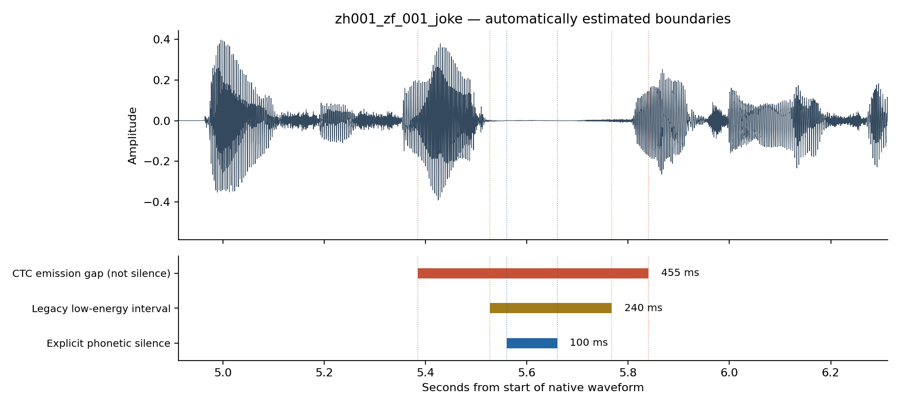
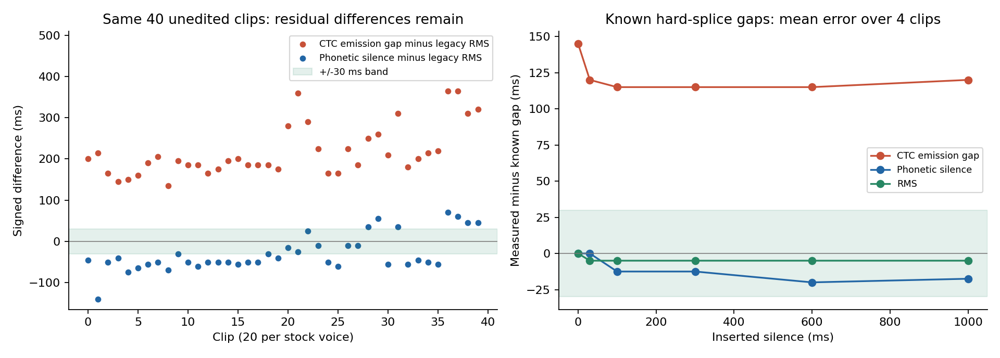
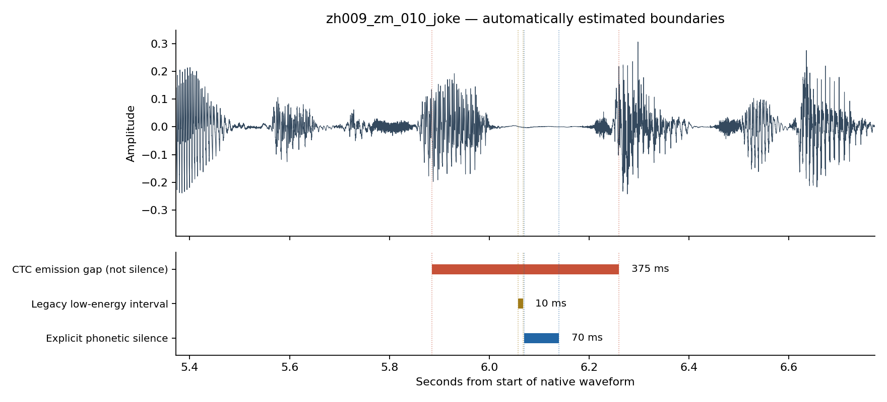

zh001_zf_001_joke
CTC emission gap: 455 ms (not silence). Phonetic silence: 100 ms. Legacy RMS: 240 ms.

The CTC emission-gap bug is fixed. Residual natural-speech disagreement remains; these are exploratory estimates, not validated humor findings. AI-generated stock voices only; human annotation deferred.

CTC emission gap: 455 ms (not silence). Phonetic silence: 100 ms. Legacy RMS: 240 ms.

CTC emission gap: 375 ms (not silence). Phonetic silence: 70 ms. Legacy RMS: 10 ms.
